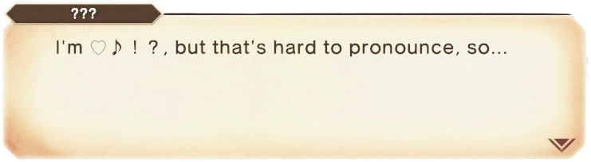

The Last of Us Part II in 2020 was a powerful and complicated experience. Frustrating, awe-inspiring... and abrupt, as well, having played it non-stop for just two days. My heart and neck were hurt by the end of the whole bloody affair.
I’m curious how this 2024 replay is going to feel. Would I be able to see that second half differently?
We finished watching Bakuman last week. I had devoured the manga many years ago, and I wanted to share with Val some of that dreams-fueled determination I felt from its very first chapter.
Now she’s Nizuma Eiji’s number 1 fan.
Later I found that there’s a Bakuman video game for the DS; but… the cruel reality is that it’s only in japanese, with no translation in sight. Regardless, I had to try it on the 3DS, and Google Translate’s camera made the visual novel segments shockingly readable. Then I got to the actual manga-making mechanics of the game and all went to hell. Inking lines as Mashiro was super fun, but the plot creation minigame with Takagi was hard to understand. There's even a moment, on this gamified creative process, when you get to go around the city looking for inspiration and stuff to use on the storyline you're writing. At that moment I was 100% sure that I would love this game, if only I could understand it.
I managed to play all the way up to the first meeting with Hattori.
He gave my manuscript a 0 in story, and a 0 in art.
Guess this one will have to remain forever a dream.
I went all the way back on my Remedy Road, and played one of Vic’s favorites from our childhood.
The first Max Payne feels very nostalgic, very 2001, and is still surprisingly fun to play. Noir New York City atmosphere... Max’s heavy-on-the-metaphor monologues... The animation for reloading the dual berettas... There's a lot to love here. It's also cool to see Remedy already playing with storytelling and meta stuff, almost foreshadowing Alan Wake 2.
I have a “space-scoundrel” character in Starfield that's taking things very, very slowly. Every now and then I start the game and continue my walk up and down New Atlantis for a few minutes, mostly talking to a few NPCS before I sign off.
But then, yesterday... the Adoring Fan made its entrance.
I haven't connected with a Bethesda RPG in a long time, but the importance of The Elder Scrolls IV: Oblivion in my gaming life can't be overstated. I need to give Starfield more time.
Also, being able to use my scoundrel background to make him pay a "fan club fee" (50 credits and a toilet paper roll) was priceless.
If Wonder was first, then Super Mario RPG had to be second. Just got Geno into the party and I already freaking love him. For a moment I could even imagine myself as a kid, trying to dress up as him; blue cape on my back and shooting beams out of my fingers.
He is that kind of cool.

So, even though SMRPG got way better now, I’ve been also trying to play some indies that have been on my list long enough for them to have already become classics. I went with Oxenfree and Her Story.
Año nuevo! A new chance to not succumb into the fear of missing out! Games-wise, life-wise and otherwise-wise.
The first couple of days were a bit bumpy at home, with an internet outage that hopefully got resolved today. But... in the meantime, I got to carry on with something that is slowly becoming a personal tradition: starting the year with a slice-of-aesthetically-wholesome-life game, abstaining from the stresses of combat and heavy puzzles. It started in 2022, blissfully delivering mail in Lake; then in 2023 the turn was for Shin chan: Me and the Professor on Summer Vacation. The Endless Seven-Day Journey. Now, for 2024, the chosen one was... Dordogne. A game that made me feel like I was living inside a French comic book.
Same as the other two games mentioned, Dordogne captures the feeling of long summer days away from the city, having few responsibilities and anxieties. We’re at the beginning of summer here in Argentina, but in regards to experiencing the outdoors... Dordogne definitely has the best version of it: idealized and in beautiful watercolor art. I loved the game, and in this entry I’ve left a couple of the poems you get to write for one of its most important activities: filling up a scrapbook with memories of the days passed. Kind of reminded me of this journal.
This journal did not exist in May. Because of that, it has zero ramblings about Link humming Saria’s Song while cooking, or just how awesome Penn looks. However, I just couldn't let 2023 end without mentioning “The Legend”. At least once.
The Legend of Zelda: Tears of the Kingdom already feels very nostalgic to me. Thinking about all the fun things I did inside of Hyrule, sort of time-travels me back to the places me, Val and the Switch were outside of the game, in the coldest days of this last winter. In between The Sky, The Surface, The Deeps, and The Reality... a lot of happy memories were created. The beauty of life and portable consoles, I guess.
How long will it be until another year with a new Zelda?
I did not expect to be back in Krato’s chains, just one year after Ragnarök. And I definitely did not expect to feel moved by a free roguelike DLC, of all things..
Last year, and in preparation for Ragnarök, I resurrected my PS3 and spent the entirety of July feverishly comboing through God of War, God of War II, God of War: Chains of Olympus, God of War III, God of War: Ghost of Sparta, God of War: Ascension and, to wrap things up norsely, a re-play of God of War (2018). Most of the Greek ones I loved, in particular II and III. I only remember not liking some of the puzzles, and of course, having a nightmarish time with the accursed Trials of Archimedes in Ascension. Well, a few things in Ascension felt terrible, really. Especially after how freaking satisfying was to put an end to the whole Olympian affair in III.
Today, completing “The Work” questline in God of War: Valhalla has brought me an entirely different kind of satisfaction. A feeling that is, nevertheless, deeply connected to that brutal wrecking of the Greek world from the old games.
It was beautiful, enlightening... and super fun.
How is this free?
. . .
P.S. Thinking of old gods and free stuff has reminded me of two things: First, Hades II is in development; second, I should take a look at those Greek myth books that Wally lent me...
Completing what Disco Elysium’s many dice rolls started last year, Baldur's Gate 3 has finally opened a door to a type of video game that I've been trying to get into, ever since I heard of Icewind Dale as a teenager. More specifically, it opened... “The Door to Diceful Combat, sometimes called Dungeons & Dragons”
For some reason, I don’t count Knights of the Old Republic in this opening-of-the-door thing. Maybe because I recklessly played those as a mix of action and graphic adventure back in the day. I just couldn't see the numbers.
But! I’m hooked now, and Val’s christmas gift is the perfect totem for this brand new obsession. The field of RPGs I can pick to play next year is definitely not a lake now, but an ocean.
Quite the change of scenery for the mind, to go from Bright Falls, Washington, to Providence Oaks, Oregon. One created in Finland and the other in the Netherlands, funnily enough.
Though Alan Wake’s ending still haunts me, I’m sort of resisting the urge to go back and start The Final Draft just now. I think I’ll save that replay for a rainy day. Instead, I’ve decided to fully embrace the red-and-green spirit and played Lake’s: Season’s Greetings; a Christmas special for one of my favorites “slice-of-life” games of recent years. At the same time, Val got to marathon her first winter in Stardew Valley, so the red-and-green spirit at home was definitely at its strongest.
At least gaming-wise. It's getting warmer here, in the southern hemisphere. So far from Twin Peaks, and "America's Little Finland."
“Charm” can come in many forms... and is the word that’s been coming to mind every time I’ve played either Alan Wake 2 or Super Mario Bros. Wonder these past few days. Both so different, and both so delightful. Who would have thought that Saga, Alan and Mario would work so well together?
Finishing chapters in Alan Wake leaves me not only with awesome songs to put on repeat and sing with my girlfriend, but also with a sense of tension in the body that reminds me a bit of when I marathoned The Last of Us Part II over a weekend.
Back in October, I put my radiant spells down and took a small detour from the already shadowy Act II of Baldur's Gate 3, jumping straight into the light-versus-shadow adventures of Alan Wake and Alan Wake's American Nightmare. Both of them were probably the biggest surprise of the year for me: the original Alan Wake with its tone and characters (as soon as you get to the diner I was already in love), and American Nightmare with its fun gameplay and writing, and a tonal shift that totally worked for me. It was also my first proper experience with Remedy and Sam Lake’s stories, as I only keep vague memories of the (shocking) first minutes of Max Payne... I think I was 11 or 12, maybe.
Yesterday I finally did the Mr. Tomassi and the Hartman boss fights in Control, but not without some suffering. Control is stunning, and after reading so many of the in-game documents that depict the world of the Bureau so vividly, I can't help but think of the potential for more stories outside of the Oldest House. I dream of quests for field agents on the road, investigating paracriminal organizations and altered items... tuning into the America Overnight radio show at the end of the day to wind down.
This world Remedy created feels rich and subtle, and is a joy to play. Sometimes brutal, too.
My lucky win over The-Thing-That-Had-Been-Hartman closed the Alan Wake episode inside of Control, so only The Foundation remains. I guess that would be all for Jesse Faden’s superb debut. All I can say is that it has made me even more eager to pick up the flashlight, and continue on this misty and winding road that so inevitably leads to... Night Springs Alan Wake II.
At this point, it feels like I’ve been saving it to end a year of many highs with a high note. And if that musical number at the Game Awards is any indication of its surrealness and spectacle... I feel like I’m in for a treat.
A survival-horror treat, soon to be handled with the lights on.
The Operation Sports crew are saints and they just saved football for me. Another Christmas miracle!
Bellinghamania is fully underway, and not since Zizou was appointed Madrid's manager in 2016 have I been this excited about the future of the club. I needed something from video games to carry me on this wave, but I was soon confronted with a landscape that couldn't be more horrifying and depressing:
PES is dead, and Master League is still missing in action. RIP.
eFootball plays well, but the online mode it promotes is awful and boring.
Football Manager is too dangerous of a drug. I should stay away. Far, far away...
FIFA EA FC is... uh... well... the only choice, I guess.
It's the only modern choice to have some sort of career mode, like old times, since all other options would require patching an old PES to make it more Bellinghamful. Sadly, it also feels terrible to play, with every player flying or skating across the pitch, with perfect first touch and an insanely precise shot accuracy.
So life was meaningless and full of pain... But then this heavenly thread changed everything, and now I should leave this entry here so I can go and play just one more game...
. . .
P.S. We got our first Christmas tree today, and it was as magical as Jude Bellingham himself:
This is the order in which I met my companion characters in Baldur's Gate 3, or rather, the order in which I became totally enamored with them, and all through the power that writing and acting has in making a truly magical video game experience.
After many months and memories with the game and this band of outsiders, I have to say... something about the ending was off. It didn't sour the journey or anything, but the stuff that happened just before the credits rolled felt a bit rushed, like a moment was missing. Saying goodbye was inevitably bittersweet, but in the back of my mind, the word "Epilogue" appeared. I could already imagine a party in the style of Mass Effect 3: Citadel, or maybe something more subtle, like that final walk around town that A Space for the Unbound did earlier in the year.
Imagine my face when I read the notes for Patch 5 yesterday.
Thinking way too much about my childhood, while writing the previous entry, left an image in my mind that I needed to research, but also a lingering question: If at the beginning I only remember having a single game cartridge (one that combined Super Mario Bros. and Duck Hunt), how did I get to play at home so much of Excitebike, Karateka, and a lot of other NES stuff?
As usual, Reddit had the answer. Everything makes sense now.
The image I had stuck in my head was that of a blue screen with a long list of titles in white letters. As it turns out, what I remembered was the blue menu screen of a bootleg NES cartridge known as 76-in-1; as in 76 pirated games in 1 shady-but-awesome cartridge.
Damn.
I can always admit that piracy had a huge starring role in defining my love for games during the unemployed days of my life. I just didn't know it went that far back. But hey, knowing what I know now about software shadiness, I think it's probable that the one proper Mario cartridge we owned might have been a fake as well. Who knows, maybe the console itself was a bootleg!
A few days ago, Val got some time off from work, and I watched her play through the final stages of Unpacking, including “the one with the childhood room”, to leave it vague. I loved how moving the ending was for us, and how beautifully it captured the idea of moving to a new place together. It also made me wish I had kept at least a couple of my gaming relics, and how wild it would be to see that old NES console again, paired with a Flintstones game that I rented so much my dad ended up buying it.
For now, I have to be content with the ROM of 76-in-1 I found online, played with an Xbox controller. I had totally forgotten about Battle City, Urban Champion, Tennis... Mabby!
Super Mario Bros. being the first thing I ever played is probably a good guess, but it is definitely hard to know for sure, now that I think about it. In my tiny-90s-kid memories of games, there's a lot of jumping and falling to my death in those first two stages of the original World 1, but there are also some fragments of Pac-Man, Circus Charlie, Excitebike, Battle City, Ice Climber... an Atari game titled Keystone Kapers?
It's impossible to know for sure, really, but in my heart, I believe Mario was the first one. Probably.
In the kid years that followed, there was a bit more jumping and falling with Super Mario Bros. 3, Super Mario World, and, of course, the breathtaking magic trick that was Super Mario 64, back in '96. The first two I remember playing mostly in tandem with my sister, at home, and the latter whenever I was given the chance in the N64s of friends and cousins. That was, pretty much, my whole personal history with Super Mario games, and with the inconveniences of being a child, and all of that falling business, I never got to see the ending of any of them.
But! The year is 2023, I'm super old now and Super Mario Bros. Wonder and its wonderful Wonder Seeds are working on me as the best remedy for a heart that misses his comrades and adventures in Baldur's Gate, still. The game feels fantastic, and surely will become the very first Mario I see through its "end". At last!
Games spent enough time in my head for the creation of this site to feel almost inevitable. Or maybe it has to do with the year ending?
In any case, here it is! I'm not entirely sure of what the goal for this rambling is, but for now I hope that someday it could be fun to look back at these old thoughts and remember the good, the bad, and of course, how great Baldur's Gates 3 is.